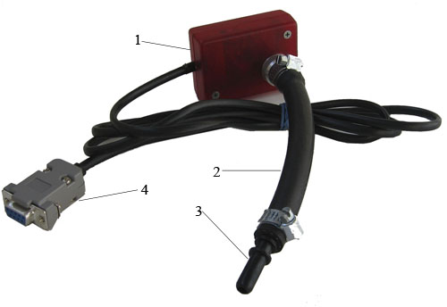
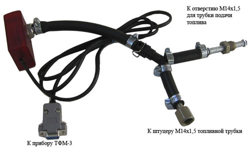
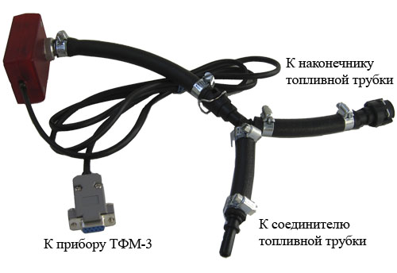
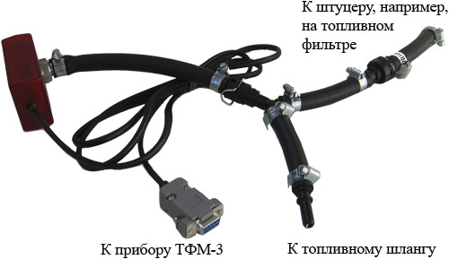

http://2a2.ru/
| тел. +7 927 800 76 16 http://2a2.ru/ |
|---|
|
главная → дополнительная комплектация и запасные части Быстросъемные соединителиДля просмотра увеличенного изображения, «кликните» по фотографии прибора. Датчик давления топлива с быстросъемным штуцером:
Меры безопасного использования быстросъемной арматуры.
Подсоединение датчика давления к ниппелю М11х1,25 топливной рампы. Подсоединение датчика давления в разрыв металлических трубок системы питания топливом со штуцером М14х1,5. Подсоединение датчика давления в разрыв быстросъемной пластиковой трубки 8 мм. Подсоединение датчика давления в разрыв быстросъемной пластиковой трубки 8 мм. |
•главная •где купить •цены •продукция •документация •программы •коды ГАЗ •ЭСУД ГАЗ •ЭСУД PATRIOT •ЭСУД ВАЗ •ЭСУД STEYR •автосервисы •сайты e-mail: •a2@2a2.ru |